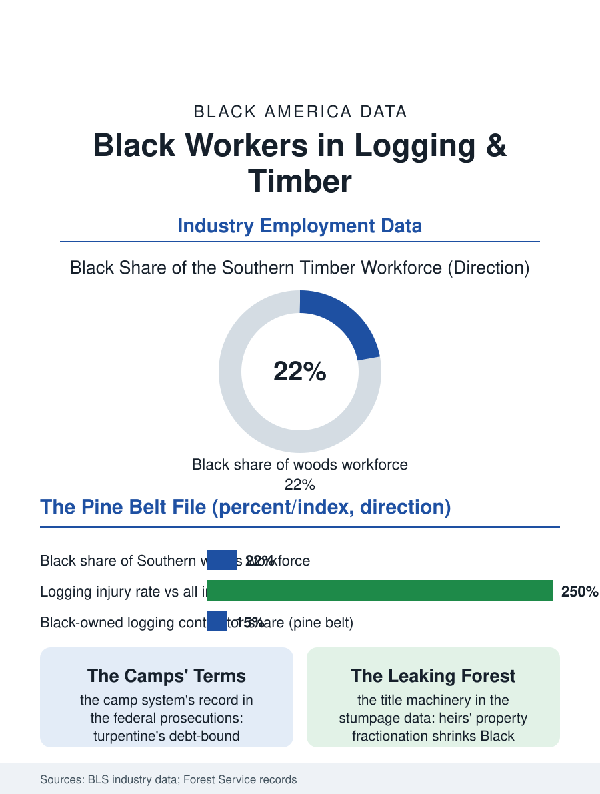

Black Employment
The Pine Belt: Black Workers in Logging and Timber
Turpentine camps to feller bunchers, the pine belt's Black workforce held its share through mechanization while the land's value leaks through the title machinery. The timber file.

The Southern pine woods ran on Black labor for a century: the turpentine camps and the sawmill towns drew their crews from the same counties the cotton was leaving, under conditions the labor historians rank with the era's worst, and the modern timber industry's mechanized remnants still employ a Black workforce in the pine belt at shares well above the national industry average. This article reads the timber file.
Turpentine and the Camps
The naval stores industry, the turpentine and rosin distilled from the longleaf pine, was the Deep South's first industrial employer of Black labor at scale, its camps strung through the wiregrass country of Georgia, Florida, and Alabama, its labor system, the debt-bound commissary and the isolated camp, the criminology-adjacent arrangement the federal peonage prosecutions of the early twentieth century repeatedly targeted. The sawmill towns that followed the turpentine frontier were the South's company towns in their purest form, the mill, the houses, the church, and the store under one ownership, their Black quarters supplying the mill's heaviest labor, the green chain and the log deck, at the era's occupational injury rates, which the compensation records preserve as the industry's blood price. The lumber unions' history in the South is the labor file's most violent chapter alongside the mines', the organizing drives met by the companies and the local order with a force the federal inquiries documented, and the integrated mill local remained the exception into the civil rights era. The certification systems that grade the wood for the export and green building markets add a paperwork tier to the contractor's load, and the firms that master it sell into the premium end of the same forest, a ladder the cooperative extension programs in the pine belt have begun, deliberately, to hold for the Black contractor whose grandfather cut for the same mill as a hired hand.
The Mechanized Woods
The modern industry's data describe a transformed workforce: the feller buncher and the processor replaced the crosscut crew, the mill's automation replaced the green chain's dozens with the control room's handful, and the logging workforce's total shrank by the familiar industrial fraction while its Black share, in the pine belt states, held at levels reflecting the rural Black population's concentration in the industry's counties, in the vicinity of a fifth to a quarter of the Southern woods workforce in the survey data. The logging contractor model dominates the woods end, the small crew company, often family-held, Black-owned in a substantial number of the pine belt's firms in the business data, selling its cut to the mills on contracts whose terms the industry's consolidation has tightened, the contractor bearing the equipment debt and the weather and the workers' compensation rates that are logging's standing position atop the injury tables. The paper and pulp mills at the industry's other end employ the larger, steadier workforce, the integrated mills' Black employment a fixture of the mill towns' economies in the pattern of the textile file's, with the same closure exposure written into the current data as the paper demand's digital decline reaches the Southern mills a generation after it reached the Northern ones.
The Forest's Ledger
The timber file closes on the land question in its industrial form: the pine belt's Black landowners, the farmers file's timber holders, sell their stumpage into the industry's market from the weaker side of the scale ticket, the heirs' property fractionation shrinking the tracts below the harvest's economic lot size, so that the forest's value leaks from the Black land base through the same title machinery as the farmland's. The conservation and carbon era adds the newest line: the pine plantation's carbon contracts and the longleaf restoration programs now pay the landowner for the standing forest's services, and the Black landowner's access to those programs, administered through the forestry agencies whose outreach the equity audits grade lowest in the South, is the file's live variable. The bureau counts the woods and mill workforce in the tens of thousands, its Black share a Southern story. The file's last image is the oldest one in the industry: a crew at the wood's edge at daylight, the machines where the mules and the crosscut teams stood, the work's danger and dignity continuous across the technologies, in the forest that has employed the same counties' Black families, on terms slowly argued upward, for a hundred and fifty years.
More in Black Employment
The Black Unemployment Rate: The Two-to-One Pattern
Black unemployment runs at roughly twice the White rate — 5.5 percent against 3.3 percent in annual averages — a ratio stable across five decades of federal data. How it is measured and why it persists.
Black Median Weekly Earnings: The 80-Cent Ratio
Black full-time workers earn a median of about $900 a week — roughly 80 cents for every dollar White workers earn. The BLS earnings data by group, gender, and occupation.
Black Labor Force Participation: Working at National Rates
Black labor force participation runs at roughly the national rate — and Black women participate at higher rates than White women. The BLS participation data.
Source: Bureau of Labor Statistics industry employment data; U.S. Forest Service and Southern forestry commission records.